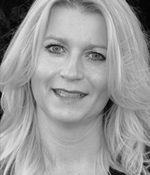

- 
Lotte Holk Arpe-Hansen
Hanne er 43 år og er gift med Peter. Sammen har de to dejlige døtre på 3 mdr. og på 8 år. Hunden Coco, er en langhåret hønsehund på 2 år.
Hanne er født i Nordjylland og har været i ejendomsmæglerbranchen i 24 år. De 3 første år af karrieren som liebhavermægler for godser, herregårde og store landbrug, derefter 3 år med salg af villaer, liebhaverboliger og ejerlejligheder i Hasseris og Aalborg C., indtil hun i 1994 startede som selvstændig mægler, og med flere butikker i Aalborg og omegn, hurtigt oparbejdede en stor markedsandel. I 2001 afhændede Hanne sine Nordjyske butikker og bosatte sig i København sammen med Peter. Siden 2001 har Hanne som selvstændig ejendomsmægler med flere butikker i København, oparbejdet en stor markedsandel og kundekreds, både på privatboligmarkedet, og i særdeleshed på projektsalgsmarkedet, som Hanne personligt har beskæftiget sig med i 12 år.
Fritiden prioriteres med familien og vennerne, og når tiden tillader det, danser Hanne bl.a. hip hop, house og disco hos AL-Dans, ligesom Hanne altid er opdateret på, hvad der rør sig på modefronten indenfor både bolig og livsstil.
-
Peter Norvig
Peter er 52 år og er gift med Hanne. Sammen har de to dejlige døtre på 3 mdr. og på 8 år. Hunden Coco, er en langhåret hønsehund på 2 år.
Peter er født midt på stenbroen i København, på Gråbrødre Torv, og fik sin første uddannelse i Sparekassen SDS. Derefter gik turen til BRF Kredit og en uddannelse som statsaut. ejendomsmægler, som blev gennemført i 1986. Kort tid før ”kartoffelkuren” i 1986 startede Peter i ejendomsmægler branchen hos Moestrup i Nordsjælland, og 2 ½ år senere åbnede Peter sin første ejendomsmæglerbutik på Ordrupvej i Charlottenlund. Gennem sine 26 år i branchen, har Peter medvirket til mere end 20.000 ejendomshandler i Storkøbenhavn.
Fodbold har altid fyldt meget i Peters liv. Amager klubben Olympia var Peters aktive del af fodbolden fra han var 7 år og indtil han var 43, og på bestyrelsesplan var han medlem af bestyrelsen i Parken/FCK fra 1996 til 2009. I dag holdes formen ved lige med lange løbeture.
-
Peter Norvig
Susanne er 40 år og bor med sin familie, som også omfatter 2 dejlige børn på henholdsvis 9 og 11 år samt deres lille Shih Tzu Mille, i en villa i Smørum.
Susanne har været i branchen i 17 år, og hun har en stærk bred uddannelse, der gør, at hun er yderst stærk og kompetent i alle faglige og juridiske sammenhænge. Susanne har en indgående viden til alle facetter af en ejendomshandel, både for almindelige privatboliger, projektsalgs boliger og erhverv/udlejningsejendomme. Hun har både beskæftiget sig i administrationen, og har også gennem sin karriere været ”i marken” med overordnet ansvar for salg af større projekter. Susanne har været hos os i 3 år, og hendes høje energiniveau og resultatorientering gør det trygt både at være kollega og kunde til Susanne. Med en baggrund og uddannelse som advokatsekretær, juridisk chefsekretær og ikke mindst statsaut. ejendomsmægler er Susanne en stærk medarbejder, du trygt kan lægge dine opgaver i hænderne på.
Fritiden bruges naturligvis med familien og vennerne, men Susanne elsker også at være kreativ i haven til villaen i Smørum, at danse zumba, og så løber Susanne ofte en lang tur. Sker der nogle kulturelle aktiviteter, er Susanne også altid på pletten.
-
Jakob Bech
Jakob er 35 år, og er gift med Ninna, der også arbejder i ejendomsmæglerbranchen. Sammen er de så lykkelige, de har fået en lille skøn datter, Victoria, der nu er 2 år. Bopælen er ved Københavns Havneløb, i en eksklusiv ejerlejlighed, i en fantastisk ejendom, vi tilbage i 2005 solgte på projektbasis for en kunde.
Jakob er med sine 14 års brancheerfaring en ihærdig og hårdt arbejdende ejendomsmægler, der aldrig går på kompromis med kvaliteten i sit arbejde, og han har altid styr på selv de mindste detaljer og paragraffer. Jakob er meget dygtig til at få enderne i en ejendomshandel til at hænge sammen til både sælgers og købers store tilfredsstillelse. Jakob giver aldrig op, og han har været med i både gode salgstider og i krise på boligmarkedet, og han har både energi, tro, evner og tålmodighed til at få ting til at lykkes. Jakob har været ansat hos os i snart 10 år, og han kan skrive utroligt mange handler i hele København på sit CV.
Fritiden bruger Jakob sammen med sin familie, der også tæller en Cairn Terrier på 10 år, og naturligvis sine venner.
-
Jens Peter Løkke
Tel. +45 2167 8621
Jenspeter@livinghomes.dkJens Peter er med sine 53 år vores ældste medarbejder. Jens Peter bor i lejlighed på Frederiksberg sammen med sin kæreste Helle, og hunden Jasko, en Cavaliers King Charles. Jens Peter har 3 dejlige børn, Amanda på 25, Nicklas på 20 og Simone på 11 år.
Jens Peter er et energibundt, og er altid i godt humør. Jens Peter er den fødte sælger, og han kan holde mange bolde i luften på én gang, og har en rigtig god evne til at holde tæt kontakt til sine kunder, og derfor er både hans kontaktnet og hans salgsresultater begge store. En aftale er en aftale, og Jens Peter går altid langt for, at kunderne føler sig yderst tilfredse.
Jens Peter har kun været ejendomsmægler i 2 år, men har en bred baggrund i salgsbranchen, der gør, at han ikke er bange for at præstere. Jens Peter har HD i udenrigshandel, har været marketingchef i Fona-kæden, filialdirektør for Yamaha Danmark, salgschef i Universal Music m.fl., ligesom han har været selvstændig i 11 år med sig eget bookingbureau i musikbranchen. I fritiden elsker Jens Peter at stå på scenen med sit band, Bryan Adams Jam, han dyrker fitness, og kører på sin motorcykel, når vejret tillader det.
-
Joanna Niesiolowska
Joanna er 35 år og bor sammen med sin kæreste Henrik og deres søn Viktor på 3 år i Hellerup.
Joanna har været mægler siden 2003, bl.a. i Lyngby, Hellerup, Østerbro og Charlottenlund. Joanna var også i årene 2004-2007 ansat hos Hanne og Peter som projektsalgsmægler, og derfor har hun en stor erfaring og ekspertise indenfor projektsalg.
Fritiden bliver brugt på familien, god mad, rejser og venner.
-
Lotte Holk Arpe-Hansen
Lotte er 39 år og bor i en villa på Amager sammen med sin mand og deres 2 børn på henholdsvis 11 og 8 år.
Lotte er ny i branchen. Hun er uddannet speditør inden for luftfragt og har efterfølgende flere år beskæftiget sig inden for logistik, salg og indkøb.
Dagligt sidder hun på vores kontor på Islands Brygge, hvor hun koordinerer og sørger for de administrative opgaver i forbindelse med projektsalg.
Fritiden prioriteres naturligvis med familien, venner og som en aktiv tilskuer til børnenes sportsaktiviteter. I dag holdes formen ved lige med løbeture.